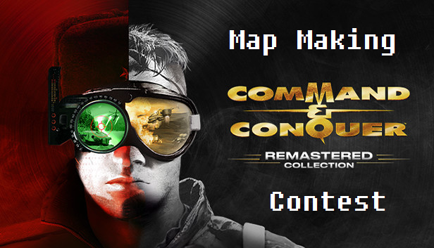

C&C TD Remastered Map Making Competition July 2021

Prizes
These will be fulfilled and paid by Danku via PayPal transfer.
🥇 1st Place - 20$
🥈 2nd Place - 10$
Judges
There is a panel of judges each of which has a variety of experience with map design & development related to the C&C Remastered Collection.
- Achromic White
- Lovehandles
- Mclama
- FeRReT666 / BlueMouse420
- Danku
Deadline
Maps must be uploaded to the steam workshop and accessible in-game by Friday 30th July 2021. Submissions will be listed under the Submissions section once received.
There will be up to 2 weeks deliberation time for judges to announce results.
Map Requirements
Your map should be designed with the following in mind:
- It will be used as a competitive 1 v 1 map - only 2 spawn points should feature on the map
- Any tileset is fine so long as it is compatible with the base C&C Remastered Tiberian Dawn game
- The design must be of your own making, ports from legacy CnCnet maps are not accepted
You should design your map with the below marking criteria in mind.
Marking Criteria
Judges will each complete a score sheet for maps submitted, these will be averaged to determine the final map scores.
Tiberium
- Do both spawn points have equal access to starting tiberium fields/amounts?
- Does one spawn have a mining advantage over another?
- Is there a reasonable amount of tiberium available? Not too much/too little.
Use of Terrain / Objects
- Creativity and use of physical elements such as walls, village structures, trees, rivers, cliffs and other terrain elements
- Use of non-physical aesthetic elements such as Smudges / Road Markings
- Elements of Realism in map layout i.e. explosion smudges in a pre-damaged town, mirrored maps with different terrain/obstacles i.e. one corner cut off with broken bridge, another with cliffs and trees
Map Goals / Points of Interest
- Is there a clear focal point for players to aim towards for map control?
This may be a contested tiberium field that may give the owning player an eco advantage, it may be better positioning on some high ground/center of map that gives a player a distinct strategic advantage, it may be capturable neutral buildings players can build off.
Base Building / Skill Expression
Crawls are an iconic part of the competitive Tiberian Dawn ladder, does your map allow opportunities for players to:
- Crawl in multiple directions
- Take advantage of faction strengths/weaknesses,
- Have a fast/short game, mid game, long/longer game?
Submission
In order to submit your map for the contest follow these steps:
- Upload your map to the Steam Workshop
- Verify it is accessible in-game via the user maps option
- Send a Link to your uploaded map on the steam workshop to Danku via one of the channels listed below
- In addition to submitting your map, it is requested that you also forward across a replay file of a multiplayer game played on the map to enable judges quick access to viewing how users have built across your map.
DannyDanku Public Discord
Discord via Direct Message
In the event of issues accessing the maps in game, please message Danku directly as it may be viable to send the raw map files for judging purposes.
A sample submission:
Hi @Danku I wish to enter the Map Contest.
Here is the Steam Workshop Link: https://steamcommunity.com/sharedfiles/filedetails/?id=2508727805
Here is a link to a replay played on the map: https://replays.cnctdra.ea.com/MOBIUS_TIBERIAN_DAWN_MULTIPLAYER_COMMUNITY_4_MAP.745903.2183678.1622992204.0.36.Replay
Getting a Replay Link
After playing a multiplayer game on your created map:
- Go to Replay / Observer
- Search for your replay and hit Launch to initiate download
- Go to your replay folder e.g. C:\Users\danie\Documents\CnCRemastered\Replays
- Sort by Date Modified to get the most recent Replay downloaded.
- Copy the name of the file e.g. MOBIUS_TIBERIAN_DAWN_MULTIPLAYER_COMMUNITY_5_MAP.745903.2179612.1622913404.0.36.Replay
- Add it to the end of this url https://replays.cnctdra.ea.com/
- Click the link to verify it correctly downloads the replay file
Useful References
- Crexis: Map Ratings
- Khyira: C&C TD Map Design & How it Affects Gameplay
- Achromic White: Understanding Map Design
- Maps for Inspiration
Additional Queries
Reach out to Danku via Discord.